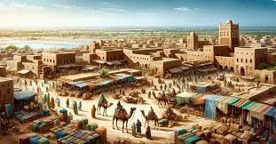

Ghana operates under a multi-party democratic system with a clear separation of powers between the executive, legislative, and judicial branches. The country is a unitary state with a presidential system of government, modeled closely after the United States.
Executive Branch: The president is both the head of state and the head of government. Presidents are elected for a four-year term and can serve a maximum of two terms. The president is supported by a vice president and a cabinet appointed from both inside and outside Parliament. The president also serves as the commander-in-chief of the armed forces.
Legislative Branch: Ghana’s legislative power resides in a unicameral parliament, composed of 275 members who are elected every four years. The parliament enacts laws, approves budgets, and provides checks on the executive. Members of Parliament (MPs) represent constituencies across the country.
Judiciary: Ghana has an independent judiciary. The judicial system is based on a combination of common law, customary law, and the constitution. The Supreme Court is the highest court in the land, and it has the authority to interpret the constitution, resolve constitutional issues, and handle final appeals.
Ghana's current constitution was adopted in 1992, following years of military rule. It provides for a multiparty democracy with a system of checks and balances between the three branches of government. The constitution also guarantees fundamental human rights, the rule of law, and free and fair elections.
The constitution has been amended several times, most notably in 1996 to adjust certain governance structures and strengthen democratic processes.
Ghana has a vibrant multi-party system, with two dominant parties often at the forefront of politics:
New Patriotic Party (NPP): A center-right political party that draws its support mainly from the southern and eastern parts of the country. It advocates for free-market policies, economic liberalization, and private sector growth.
National Democratic Congress (NDC): A center-left party that has traditionally drawn support from the northern, central, and Volta regions. The NDC has a more social-democratic ideology, advocating for state intervention in the economy, social welfare programs, and equitable development.
Although the NPP and NDC are the dominant political forces, other smaller parties participate in elections, though they often struggle to gain significant traction. Some of these smaller parties include the Convention People's Party (CPP) and the People's National Convention (PNC), both of which trace their origins to the legacy of Ghana's first president, Kwame Nkrumah.